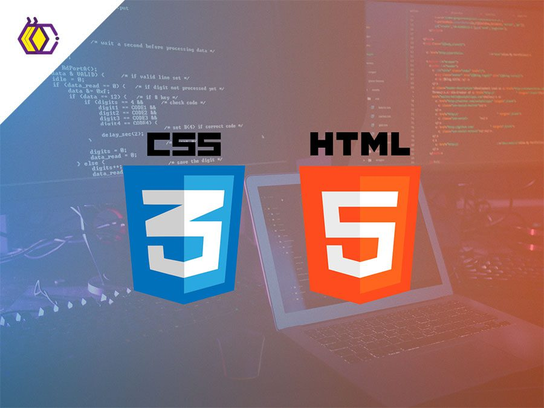

CSS son las siglas en inglés de Cascading Style Sheets, que significa “hojas de esilo en cascada”. Es un lenguaje que se usa para estilizar elementos escritos en un lenguaje de marcado como HTML. CSS fue desarrollado por W3C (World Wide Web Consortium) en 1996 por una razón muy sencilla. HTML no fue diseñado para tener etiquetas que ayuden a formatear la página. Está hecho solo para escribir el marcado para el sitio. La relación entre HTML y CSS es muy fuerte. Dado que HTML es un lenguaje de marcado (es decir, constituye la base de un sitio) y CSS enfatiza el estilo (toda la parte estética de un sitio web), van de la mano. CSS no es técnicamente una necesidad, pero no querrás tener un sitio que solo tenga HTML, ya que se vería completamente desnudo.
background es una propiedad en CSS que se utiliza para definir el fondo de un elemento HTML. Esta propiedad tiene varias subpropiedades que te permiten controlar diferentes aspectos del fondo, como:
background-color: Establece el color de fondo. background-image: Define una imagen de fondo. background-repeat: Indica si la imagen de fondo debe repetirse y cómo hacerlo. background-position: Establece la posición de la imagen de fondo. background-size: Ajusta el tamaño de la imagen de fondo.